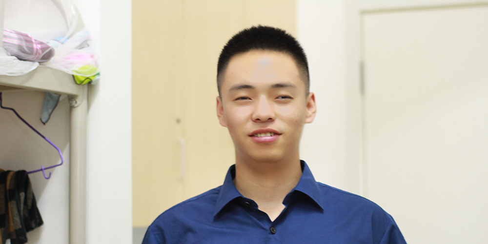

“海阔凭鱼跃，天高任鸟飞”，这句出自古诗句中表示在广阔的天地里，人们可以自由的去施展自己的才能，我就是一匹千里马，而您是那个伯乐吗？
我是杨举，来自西安汽车科技职业学院沃尔沃校企合作班，英文名是Eric，我是一个热情，积极向上的一个运动青年，
在生活中，我喜欢运动，不仅仅是因为运动能够让我尽情的挥洒汗水，而且还能够让我可以放下所有的事情重新的找回自我，让我可以更加积极向上的去面对任何困难的事情，
在学习中，我能够通过实践与教学相结合的方式来系统的完善沃尔沃汽车专业知识的学习，掌握了扎实的专业基础 知识，并且培养了一定的分析问题，解决问题的能力。
在校期间，我积极要求进步，在不忘学习的情况下，取得良好成绩的同时，积极参加了学院的各项活动，从中不断地锻炼自己，让自己能够全方位的提升综合素质。
老实做人，认真做事，这两句话反应了一个人在社会的立足之本，也是我做人做事的基本要求，我想，能够拥有一个良好的职业道德与职业素养是非常重要的，用于创新，善于创新，吃苦耐劳，注重团队合作是一个非常好的证明。
成为一名优秀的汽车售后技师是我一直努力和奋斗的目标，虽然我暂时不是最优秀的，但是我一定会在进入企业后加倍学习挤身于这一优秀的行列中，在汽车领域中体现自己价值。